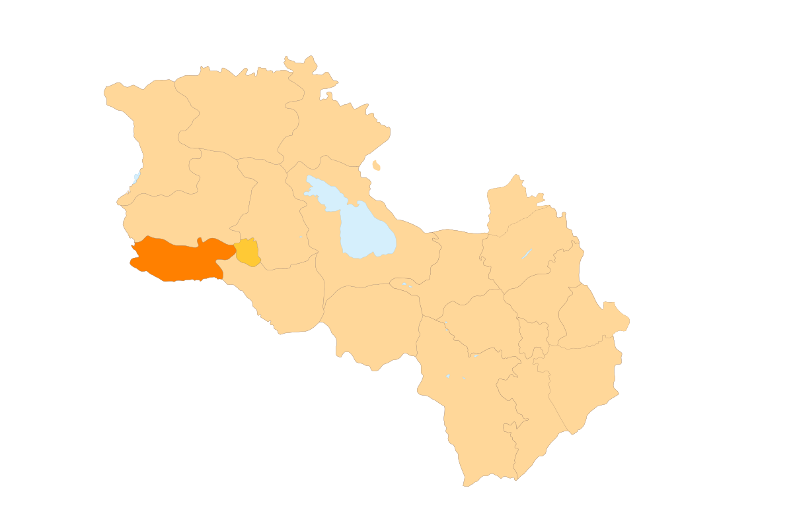

Հետ գնալ
Արմավիրի մարզ
Արմավիրի մարզ, մարզի կարգավիճակ ունեցող վարչատարածքային միավոր Հայաստանում։
Արմավիրի մարզկենտրոնն Արմավիր քաղաքն է։ Տարածքը 1242 կմ² է, բնակչությունը 284 հազար մարդ։ Գտնվում է 800-1000 մ բարձրություններում։Մարգարա գյուղի մոտ Արաքս
գետի վրա կառուցված ավտոճանապարհային կամուրջը Հայաստանը միացնում է Թուրքիային։ Մարզի տարածքը եղել է պատմական Հայաստանի Այրարատ նահանգի մի մասը։
Կլիման խիստ ցամաքային է։ Մթնոլորտային տեղումների քանակը չի գերազանցում 300 մմ։ Ամառը շոգ է, տևական (4-5 ամիս)։
Արմավիրի մարզի քաղաքային համայնքների թիվը 3 է՝
Արմավիրի մարզի տարածաշրջաններն են՝
- Արմավիր
- Բաղրամյան
- Էջմիածին